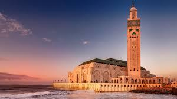
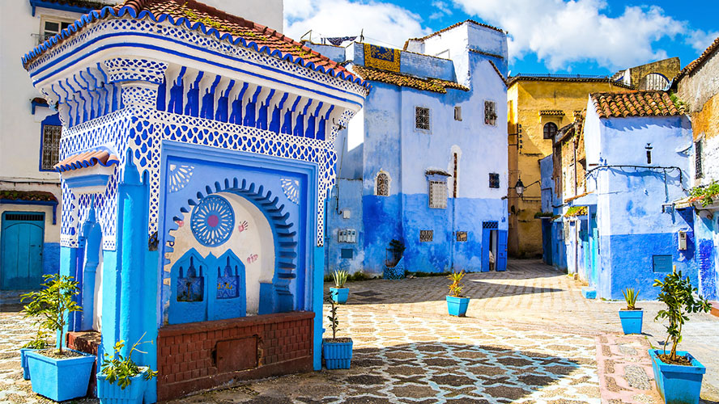
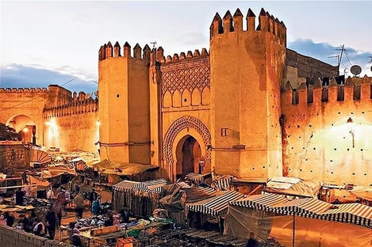
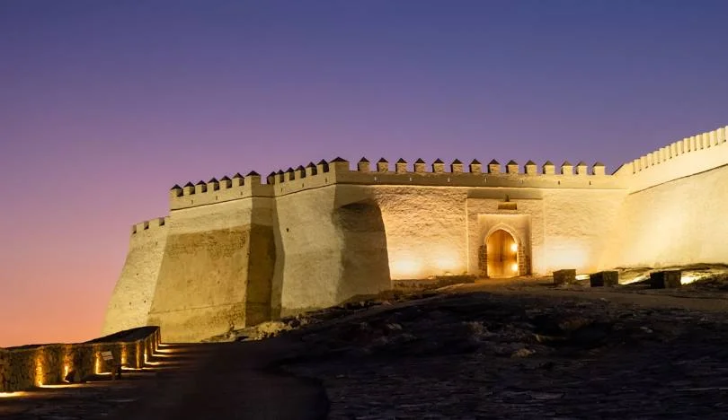

HOST CITIES – CAN 2025






Rejoignez-nous pour entrer dans l’histoire alors que le Maroc accueille la 35ᵉ Coupe d’Afrique des Nations.
Lancez-vousLe Maroc est fier d’accueillir la 35ᵉ édition de la Coupe d’Afrique des Nations (CAN 2025), un événement majeur qui rassemble toute l’Afrique autour de la passion du football. Fort de son expertise organisationnelle, de ses infrastructures modernes et de sa riche culture sportive, le Royaume promet une CAN exceptionnelle, mêlant émotion, excellence et hospitalité.
9+
Infrastructures aux standards internationaux6
À travers tout le Royaume24
Les meilleures équipes africaines